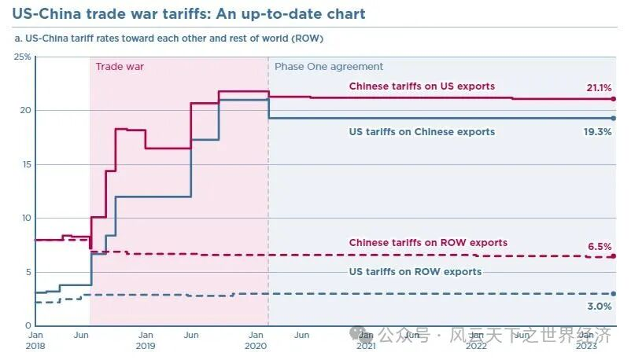
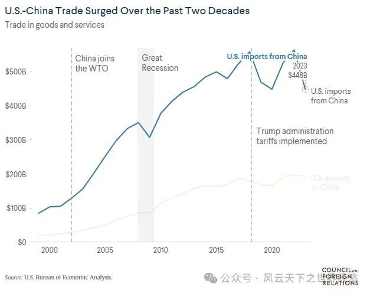

中美关税水平自2020年2月双方达成第一阶段协议之后便处在一个极为稳定的状态：美国对来自中国的66.4%的商品征收高达19.3%的平均关税，这些关税比2018年贸易战开始前高出6倍多。而中国反制措施所对应的商品覆盖率为58.3%，平均关税为21.1%。这组数字是通过历时3年的关税持久战所取得的艰难平衡。但是，从2024年的8月1日起，预计这种均势又将被打破。
2024年5月14日，白宫经过细致的政策审查后做出了重大决定：将中国半导体和太阳能电池的关税从25%一举提升至50%，同时注射器和针头的关税也从原本的0%猛增至50%，而锂离子电池的关税则从7.5%飙升至25%。其中对电动汽车（EV）的关税加征规模最为惊人，将中国产电动汽车的关税税率从25%翻了两番，直接升至100%的高位。美国国家经济委员会的莱尔-布雷纳德（Lael Brainard）表示，这些举措将为“我们未来至关重要的行业创造一个公平的竞争环境”。然而，这一决定的代价将由美国消费者承担。

当前中美关税水平对比
相同的理由，不同的事实
这显然是一份从特朗普时代抄来的作业，征税的理由仍然是老掉牙的301条款。特朗普在2017年完成的一份关于中国在知识产权方面的不正当竞争报告成了他发动贸易战的关税的法理基础，当时虽然充满争议但尚有些许事实依据。而拜登政府生搬硬套地将此理由强加到电动汽车领域实属牵强。因为中国美国的电动车技术值得中国借鉴的地方着实有限，中国在电机、电控和电池三项核心技术上已遥遥领先于美国。更为重要的是，依赖超级生产规模，中国生产电动汽车的成本之低已经远远超越其他国家竞争对手的想象。
如果知识产权只是一个征税的借口的话，那么其背后一定另有其因。在美国总统大选年选择亮出关税利爪，这在民主党的历史上并不多见。由此足以判断此次加税的政治意义要远大于经济意义。在关税问题，或者说在钳制中国商品这个问题上，两党达成了难得的一致。美国税收基金会高级经济学家埃里卡-约克（Erica York）也支持这种判断。她认为，两位候选人都在 "走同一条路"，即提高贸易壁垒和向内看，"而不是看我们能在政策方面做些什么，使我们的部门更具竞争力"。她进一步补充道，政府宣传关税具有战略意义是一种 "委婉的说法，意在保护那些在政治上对政府非常重要的部门"。"这归根结底是政治经济学的计算，而不是什么是最有经济意义的，或者什么是美国消费者最负担得起的说辞"。
中美经贸关系将加速“疏离”
中国崛起，COVID-19 大流行病以及相继爆发的地缘冲突暴露出的全球供应链脆弱性，促成了美国重塑自己产业优势的决心。在此认知下，对某些战略性产业具有精准制导意义的政策次第推出。2022 年通过的《芯片与科学法案》和《降低通货膨胀法案》将数千亿美元用于科学研究和半导体等高科技产品的国内生产。尽管拜登政府一再辩称，这些限制措施是旨在维护国家安全的 "小院高墙"策略的一部分，而不是更广泛的经济 "脱钩"。美国商务部长吉娜-雷蒙多（Gina Raimondo）在2023年8月访华期间甚至还表示，美国相信 "一个强大的中国经济是一件好事"。
但是，一个不容质疑的后果是，此举叠加上前届政府的“贸易战”，中美经贸关系开始出现了重大结构性变化。首先，中国在美国贸易伙伴中的地位开始下滑。尽管中国对美出口在2022年创造了5640亿的历史峰值，但不可否认的事实是，2023年中国对美出口回落至2013年的水平，其在美国市场的位次已经由第一名降至第四。从某些科技产品的贸易数据来看，有观点认为中美已经开始“初步脱钩”。管理咨询公司科尔尼的研究表明，2022年中国在美国在亚洲进口的制成品中所占的比例已从2013年的近70%降至50.7%，随着美国等西方国家企业将业务从中国转移出去，这一比例可能在今年年底进一步降至50%以下。

中国双边经贸关税走势
其次，美国与欧洲的贸易关系变得愈加紧密。2022年美国从欧洲的进口额增长近13%，而从中国的进口仅增长6%，美国的越南进口份额在过去5年翻了一番，从印度、马来西亚等国家进口的商品份额也有所扩大。由此可见，由印度越南马来西亚等国家组成的亚洲替代供应链（ALTASIA）比中国更具成本优势，并持续增加对美国的出口。德意志银行的研究显示，美国依赖中国供应的商品中有95%可以在亚洲其他地区找到替代供应。
一个新的贸易版图可能正在悄然形成，在过去中美主导的全球贸易链条的断裂带上，一组具有特定禀赋的国家成为第一批受益者。
除此以外，中国商品远离美国的贸易多元化是中国对贸易战的第三个回应。美国Peterson国际经济研究所的研究表明，即使美国仍然依赖从中国的进口需求，中国也在为其产品进口寻找替代市场。例如，自2018年中美贸易战开始以来，中国从美国以外国家进口的平均关税率已从8.0%降至6.5%，其中大部分降幅发生在贸易战开始之后。中国在贸易伙伴上的“扩圈“努力还不止如此。为了进一步谋求”后美国“时代的贸易前景，中国正在积极地构筑一个范围更广的自由贸易协定网络。2020年，批准加入了按市场规模计算世界上最大的自由贸易区--区域全面经济伙伴关系（RCEP），并申请加入全面与进步跨太平洋伙伴关系（CPTPP），这两个伙伴关系的成员中都没有美国。尽管在歧视性贸易协定的签署上有些后知后觉且起步较晚，但截止目前，中国签订的各类自由贸易协定已经达到了20个，它们有一个共同的特点：没有美国。
从短期来看，一些美国人可能会将中国贸易模式的转变视为 "脱钩 "的可喜进展。但中国向其他市场的多元化发展也意味着，未来美国关税的影响将更小，杠杆作用将更弱。
拜登对中国采取的行动可能会在政治上起到推动作用，但特朗普政府在贸易战中的经验教训表明，这些措施最终很可能会弄巧成拙：削弱海外对贸易的支持，增加报复带来的政治成本，并使关税成为日益削弱的对华武器。
为未来征税
与上一轮关税近乎无差别的打击不同，拜登政府的此轮征税措施更具针对性。当时，特朗普先生的关税政策覆盖了66.4%中国商品，其价值超过3500亿美元，大部分商品的税率为25%。而此次涉税金额约为180亿美元，但其税率要高得多。因此，这影响的不是当前的贸易流量，更关乎未来的潜力。
在欧洲，中国制造的汽车（包括外资企业）所面临的关税相对较低，仅为10%，然而它们却占据了近四分之一的电动汽车市场。相比之下，在美国，几乎没有中国制造的电动汽车上路。而随着新的超高关税的实施，这种情况很可能会持续下去。
除了征税规模更小，这次的加征关税的性质与此前的中美贸易战并无二致，因此对于关税转嫁的研究结论同样也适用于这一次。根据CEPR的相关专家的分析，中美贸易战所加征的关税，中国进口商和消费者只支付了中国报复性关税的 68%，而美国人却承担了美国关税的 93%。而这种令人费解的差异主要归因于两国不同的进口结构和关税转嫁的产品差异。
中国从美国进口的主要产品包括大豆和玉米等农产品以及飞机和汽车等高端制造业产品。相比之下，美国主要从中国进口劳动密集型产品，如电子产品等。基于 HS产品编码的关税转嫁率估算结果，不同产品的关税转嫁率各不相同。农产品（如蔬菜和动物产品）和高科技制成品（如飞机）的关税转嫁率往往较低。此外，同一产品在两国的关税转嫁率也可能不同。从根本上讲，这种差异又取决于各国不同品类市场上的供需弹性。
根据以上研究，中美贸易战后美国经历了最近40年来最为严重的通货膨胀也就不足为奇了。而为此次关税买单的，仍将是美国的消费者。对于中国车企而言，摆在面前的路有两条：一是暂时战略性地回避美国市场，二是谋求在第三国建厂，这也是世界主要车企纷纷布局有“亚洲底特律“之称的泰国暖武里府的原因。
在当前这种竞争格局下，欧洲对于中国电动汽车的反应将会显得更加重要。毕竟，这是一个正在蓬勃发展的市场，自2020年以来，欧洲进口中国电动汽车数量增加了一倍多。无论是欧盟主席冯德莱恩，还是德国总理朔尔茨，尽管从决策层传来的言论大都是积极的，但欧洲是否会步美国后尘采取行动，以及采取何种行动，将对全球电动车的竞争格局产生至关重要的影响。
一个略带戏谑的场景出现了，中美的汽车关税之争的关键角色既非美国也非中国，而是欧洲。